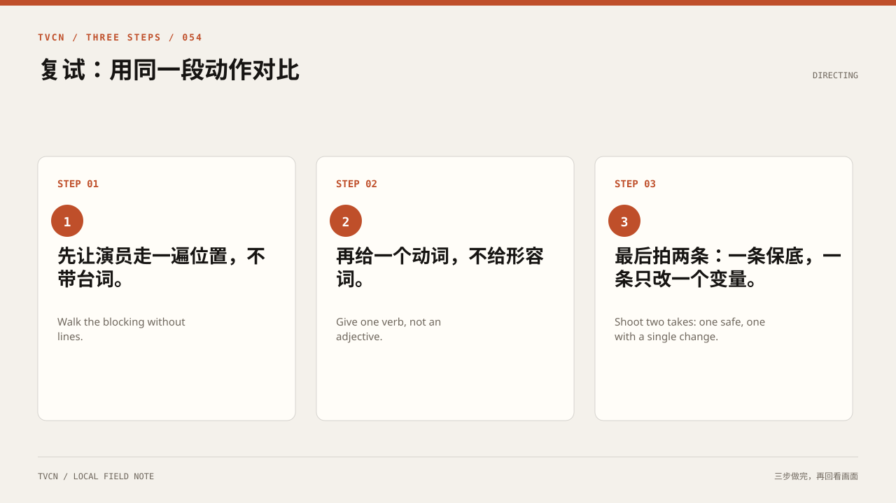

现场
复试给同一段 30 秒动作：进门、找东西、发现不对。两个人用同一机位、同一台词，回放对比反应。
怎么做
- 给同一段 30 秒动作：进门、找东西、发现不对。
- 两个人用同一机位、同一台词。
- 回放对比反应，不看谁更讨喜。
别踩
别让每个人演不同片段；片段不同，比较就不成立。
DIAGRAM / Directing
三步流程

三种原因
针对“复试：用同一段动作对比”，先按三个方向排查；每次只改一个变量，改完录 30 秒对比，看变化跟着哪个环节走。
| 原因 | 现场信号 | 5 分钟验证 |
|---|---|---|
| 只读台词 | 复试还在读第一轮同一段，导演看不到变化 | 让演员用同一段做两个不同意图 |
| 没有对比 | 两版表演一样，无法判断可塑性 | 指定一版压住、一版外放 |
| 没有调整 | 演员只能演准备好的版本，接不住现场指令 | 现场给一句新动作，看反应 |
现场诊断
- 准备同一段 30 秒动作，不要只准备台词。
- 让演员先演一版“想留下”，再演一版“想走”，观察身体差异。
- 给一句新指令：把杯子放下再回答；看演员是否能接住。
修法
复试不是再看一遍第一轮，是看演员能不能在压力下改变。用同一段素材做对比，才看得见可塑性。
- 固定一段动作和两句台词，所有候选人用同一份材料。
- 要求两版不同意图，不要只换语气。
- 现场给一次调整，记录演员接指令的速度。
- 拍 wide 和 close 各一条，检查他在不同景别下是否都成立。
失败案例
处理“复试：用同一段动作对比”时，下面三种做法会更糟；先选一个替换动作，别同时改三个变量。
| 失败做法 | 为什么会更糟 | 替换动作 |
|---|---|---|
| 让演员重复同一版 | 只看到熟练度，看不到范围 | 要求第二版换意图 |
| 只聊不演 | 面试变成聊天，无法判断镜头前状态 | 至少拍一条 |
| 给抽象指令 | “再真诚一点”无法执行 | 给动作和对象 |
验收表
验收不是“感觉好了”，是这四项都能指认、能回放、能记录。
| 验收项 | 通过线 | 记录 |
|---|---|---|
| 同一材料 | 所有候选人使用同一段动作/台词 | 复试表 |
| 两版差异 | 两版意图不同，身体能看出来 | 回放对比 |
| 接指令 | 演员能在一次调整后改变 | 现场记录 |
| 景别 | wide/close 各一条可用 | 素材检查 |
图片说明：本页封面、图解与步骤图是编辑示意或结构图，不是本页实测照片，也不能当作器材测试证据；AI 辅助生成的图会在图注标出。判断器材或画面，以正文的测试条件与现场记录为准。